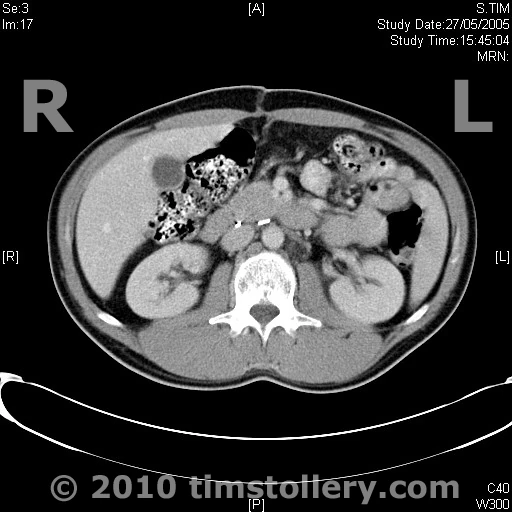

Et liv. En dagbok. En historie.
Historien
Rundt historien
Hjem / Bilder og resultater
Bilder og resultater
CT-bilder tatt før og etter behandlingen.

Valgene dine huskes i denne nettleseren. Nettleserens zoom fungerer også.
Søk i dagboken etter datoer, personer og behandling.